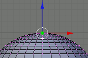

Объекты в Blender. Практическая работа "Капля". Урок 6
Инструкционная карта
Версия Blender: 2.48
| № | Задание | Способ выполнения | Иллюстрация |
|---|---|---|---|
| 1 | Запустив Blender, удалить куб. | X, затем Enter. Или Delete, затем Enter. |
|
| 2 | Добавить на сцену сферу. | Пробел. Выбрать: Add -> Mesh -> UVSphere. Окно "Add UV Sphere": нажать "OK". |
|
| 3 | Переключиться на вид спереди. | 1 на NumLock. | |
| 4 | Приблизить сферу. | Навести мышь на сферу и покрутить колесо мыши. | |
| 5 | Переключиться в режим редактирования. | Tab |  |
| 6 | Сбросить выделение. | A | |
| 7 | Выделить самую верхнюю вершину сферы. | Щелчок правой кнопкой мыши по самой верхней точке сферы. |  |
| 8 | Включить прапорциональное редактирование переходов. | Нажать O (англ. буква "оу"). |  |
| 9 | Переместить вершину вверх и, возможно, немного в сторону, предварительно отрегулировав количество передвигаемых вершин. | G - включение режима перемещения. Колесо мыши - регулировка охваченных вершин (видна окружность). |
 |
| 10 | Слегка переместить вверх нижнюю вершину. | Аналогично п.7 и п.9 | |
| 11 | Переключиться в объектный режим | Tab | |
| 12 | Придать получившемуся объекту сглаженность. | Кнопка "Set Smooth" на панели редактирования (Editing). | |
| 13 | Переключиться на вид из камеры | 0 на NumLock. | |
| 14 | Сохранить файл. | F2 |